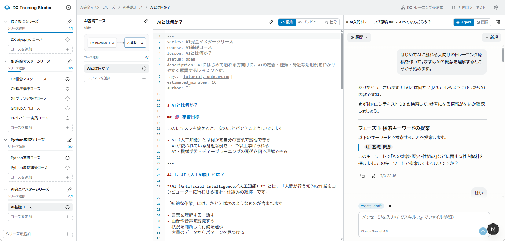
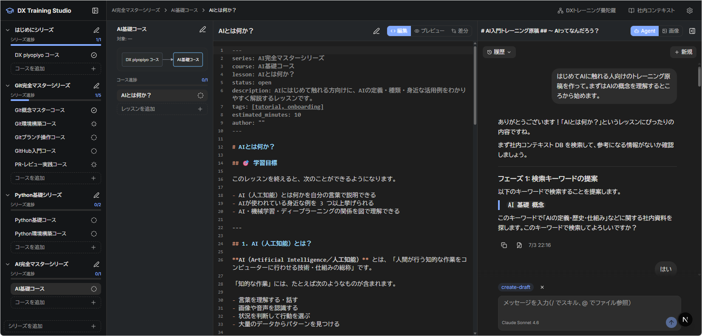
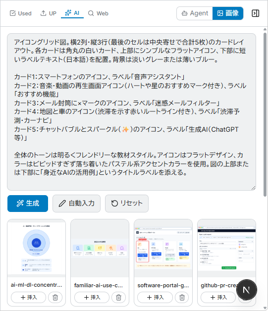
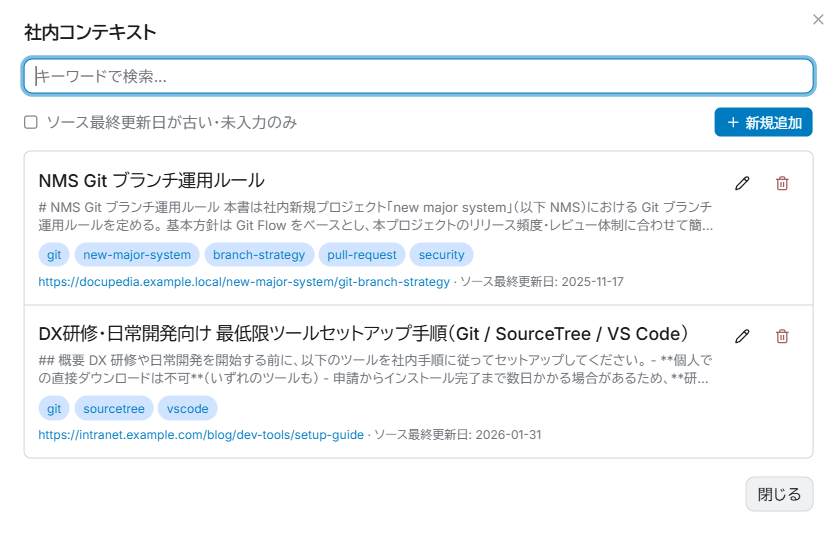

DX Training Studio
6月月次課題 / mind チーム・北村 / 提出期限 2026.07.05
教える人の手が足りない。
受講者は自分のペースで学びたい。
ひとことで言うと ──
トレーニング原稿を作る「スタジオ」
シリーズ・コース・レッスンを4つの画面で同時に見ながら、AIと一緒にコンテンツを仕上げる
ここから、課題の背景・設計判断・工夫した点を順に見ていきます。
解くべき課題
会社で新しいプロジェクトが始まり、開発の道具立てが Git / GitHub に変わりました。ところが、ほとんどの人がまだ慣れておらず、理解度もバラバラです。
多くの人にトレーニングが必要ですが、教えられる人の時間は限られている。だからこそ、受講者が自分のペースで、自分のレベルに合った内容を、独習形式で進められるコンテンツが欲しい——それが出発点です。
目指す姿
受講者が自分のペースで、レベルに合った内容を、独習形式で進められるトレーニングコンテンツを用意する。その原稿づくりを支えるのが DX Training Studio です。
作成したツールの概要
本気 AI ドリルの構成を参考に、トレーニングを シリーズ → コース → レッスン に分解しました。それらを各ペインで効率よく管理しながら作成する仕組みです。
コンテンツの企画・作成・公開までを支援するため、ツール名を DX Training Studio としました。「Studio」には、原稿を仕上げる作業場という意味を込めています。
コンテンツの階層構造
ライトテーマ — 全体画面

左からシリーズ、レッスン、エディタ、AI助手の4ペイン
ダークテーマ — 全体画面

長時間の執筆でも目が疲れにくいダークテーマにも対応
どのデータを、どこに、なぜ保存したか
DX Training Studio はローカルで動かすことを前提にしています。作成したコンテンツ（Markdown）は GitHub に登録すれば十分と考え、細々とした設定は JSON などでローカルに保存する仕組みにしました。
そのうえで、特に設計を詰めたのが次の2つです。どちらも「クラウドに置く本線」と「社内では使えない場合のローカル保存」を切り替えられるようにしています。
データの置き場所マップ
工夫したポイント
画像の作成や社内コンテキストの登録を、AI が支援するようにしました。手作業だけだと続かない作業を、対話の流れの中で進められるようにしています。
画像作成を AI が支援
プロンプトを元に AI が画像を作ります。そのプロンプト自体も、コンテンツの内容とカーソル位置から AI が判断して作成します。執筆中の文脈に合った図解を、その場で差し込めます。

画像マネージャ — プロンプトから生成し、ギャラリーから原稿へ挿入
社内コンテキスト登録を AI が支援
社内コンテキストの情報は膨大です。AI が必要なデータを抽出し、Markdown にまとめたうえで登録する仕組みにしました。登録後はキーワード検索で、原稿作成中に必要な社内ルールを取り出せます。

社内コンテキスト — タグ・URL・ソース最終更新日付きで管理
苦戦したポイント
Claude Code のようなチャット画面を自作しました。実装はかなり大変でしたが、AI と自然な対話をしながらコンテンツを作れるようになりました。スキルの呼び出しやファイルの参照にも対応しています。
検索キーワード案: 「AI 基礎 概念」
乗り越えた先にあるもの
チャットを自作したことで、スキル呼び出し（/）やファイル参照（@）を原稿作成の流れに組み込めました。単なる質問応答ではなく、作業の相棒として使える対話画面になっています。
感想と今後の課題
感想
AI がなんでもやってくれるため、アイデアが次々に湧いてきます。その分、どこまでやるかの見極めが大変でした。こだわると時間がいくらあっても足りません。
今後の課題
トレーニングコンテンツの原稿を書くスキルを5ヶ月目の課題で取り組みたいです。そして、コンテンツの公開を卒業課題にしたいと考えています。